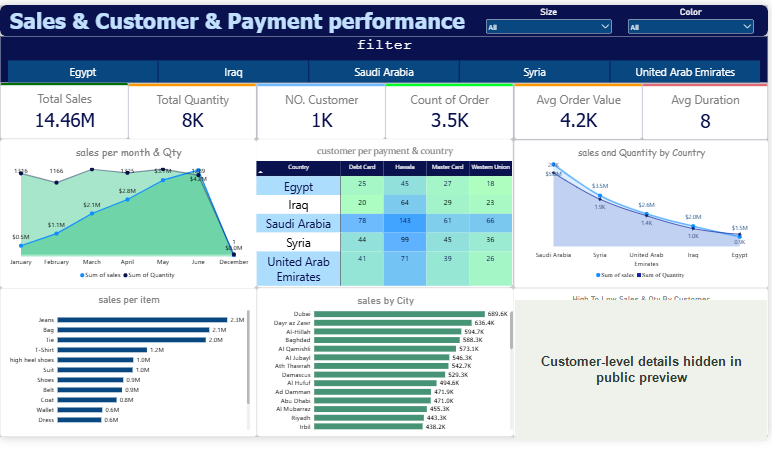

Sales, Customer & Payment
Performance Dashboard
An interactive Power BI report designed to explore commercial performance across products, customers, payment methods, and markets. The report brings key metrics and multiple analytical views into one place.
Project snapshot
The dashboard combines high-level performance indicators with detailed breakdowns to support exploration of sales trends, product contribution, geographic performance, customer activity, and payment behavior.
Download the Power BI report
Download the original Power BI Desktop report file to explore the report locally.
Requires Microsoft Power BI Desktop to open.Dashboard preview
The report includes slicers for Size and Color, plus views for monthly sales and quantity, payment method by country, sales and quantity by country, sales by item, sales by city, and customer-level performance.

Analysis areas
- Sales performance: monitor overall sales and monthly movement.
- Product contribution: compare sales across items and quantities.
- Geographic analysis: explore performance by country and city.
- Payment analysis: review customer payment patterns across markets.
- Customer activity: examine order and customer metrics while keeping individual-level information private.
- Interactive filtering: use Size and Color slicers to explore subsets of the report.
Tools & skills demonstrated
Microsoft Power BI · KPI reporting · Interactive dashboards · Business data visualization · Sales analysis · Customer and payment analysis · Geographic analysis
Public sharing note
The portfolio page and preview are published with customer-identifying details removed. The original PBIX and source workbooks are not included in the public repository because they may contain identifiable customer records.